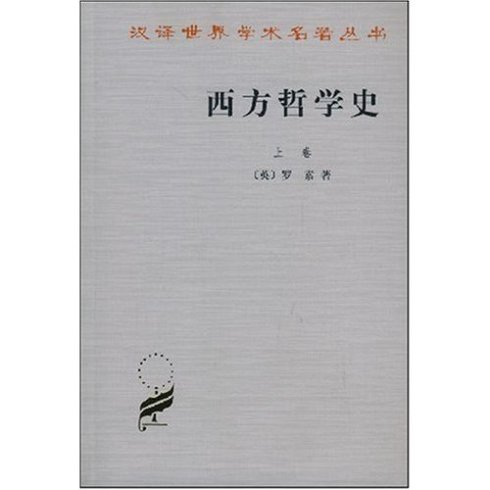
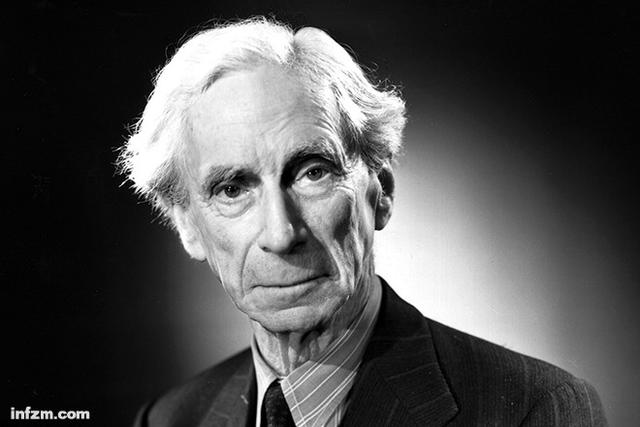

西方哲学史
罗素简介
罗素(Bertrand Russell，1872-1970)，英国数学家、百科全书式思想家。也是本世纪西方影响最大的学者和社会活动家之一。
罗素曾访问苏联，会见列宁；受梁启超邀请，他于1920-1921年间到中国讲学9个月，与中国的知识分子和各界人士广泛接触，推进了中国的新文化运动，“罗素热”风靡全国。
他一生著述七八十种，其大部分作品都能把理论的深刻性和表达的通俗性结合起来，其流畅清新的散文享誉甚高，1950年被授予诺贝尔文学奖。
罗素相信：不幸在很大程度上应该归因于一种错误的世界观；而幸福是人的一种权利，是人们应该追求的东西。在《幸福之路》中，罗索把一些经由他自己的经验和观察证实过的通情达理的意见娓娓地归纳出来，制出一张献给读者的方子，希望无数感到郁闷的男男女女，能够在此找到他们的病案，能够凭着适当的努力变得幸福。
西方哲学史简介
哲学史旨在有联系地阐述那为解决存在问题或使人了解我们的经验世界而作的各种尝试。它是从古至今探源究理的人类思想的发展史；不仅按年代列举和解释各种哲学理论，而且研究各种哲学理论彼此的关系、产生的时期，以及提供哲学理论的思想家。每一种思想体系或多或少地有赖于其所由兴起的文明、以前各种思想体系的性质，及其创始者的个性；它又反过来对当代和后代的思想和制度发生很大的影响。所以哲学史必须力求把每一种宇宙观放在它适当的背景中，把它看作是一个有机整体的一部分，把它同它过去、现在和将来的文化的、政治的、道德的、社会的和宗教的因素联系起来。哲学史又必须试图追踪人类思辨历史上往前推进的线索：说明称为哲学的思想观点怎样产生，各种问题和提供的解答怎样引起新的问题和答案，各个时代对于达到最后的解决有哪些进展。
介绍各种体系时，我们将注意让作者摆出自己的观点，而不泛加品评。可以发现：哲学史在很大程度上是对哲学最好的评论者；某一体系由它的后继者所继承、演变、发挥或推翻，这就会暴露其中的错误和矛盾；这种体系又往往是新的思想倾向的起点。哲学史家在自己的研究中应当采取不偏不倚和客观的态度，并且尽可能避免在探讨中渗入自己的哲学理论。但是完全消除个人因素是不可能的，哲学史家先人为主的成见必然在一定程度上流露于他的著作中。其表现方式多种多样：重视某些哲学，表明什么是进步和衰退，甚至对各个思想家论述的篇幅也有所不同。所有这些都是无可避免的。不过，应当让每个哲学家有机会充分地表明自己的论点，而不要常常加以批驳，使他受到干扰。而且我们不能单从现在的成就方面着眼来批评一个体系，就是说，不能用今天的标准来衡量而贬低它。同近代理论相比较，古希腊的世界观似乎是朴素、幼稚和粗糙的，而嘲讽这种世界观却极不明智。从当时的观点来看，人类最初努力了解世界而形成的这种世界观，显然是划时代的事件。评价一种思想体系，必须着眼于它本身的目的和历史背景，着眼于同它直接的前身和后继的体系相比较，着眼于它的前因后果以及由它所引起的发展。因此，我们的研究方法是历史的和批判的。